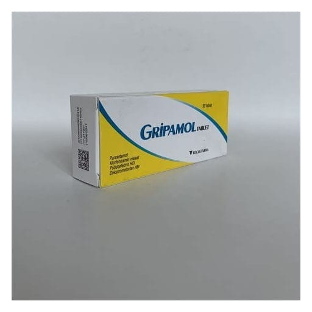

Gripamol Tablet

Ne için kullanılır
KT · Bölüm 1• GRİPAMOL içerisinde 30 adet beyaz renkli tablet bulunur. GRİPAMOL’de yardımcı madde olarak kullanılan laktoz (anhidr) sığır kaynaklıdır. GRİPAMOL, bir ağrı kesici ve ateş düşürücü (parasetamol), bir antihistaminik (klorfeniramin maleat) ve mukozanın şişkinliğini azaltarak tıkanıklıkları gideren bir dekonjestan (psödoefedrin hidroklorür) ve bir öksürük baskılayıcı (dekstrometorfan hidrobromür) olmak üzere dört etkin madde içeren kombine bir ilaçtır. • GRİPAMOL grip ve soğuk algınlığı gibi durumlarda ortaya çıkan; ateş, burun tıkanıklığı, öksürük, kırıklık hali ve adale ağrıları, genizde kaşıntı gibi belirtileri gidermeye yönelik tedavi sağlamak amacıyla kullanılır.